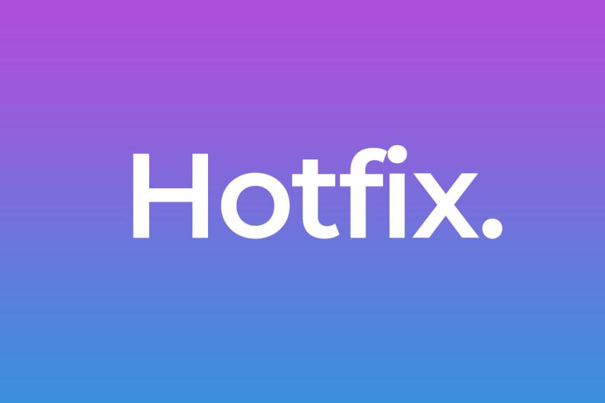
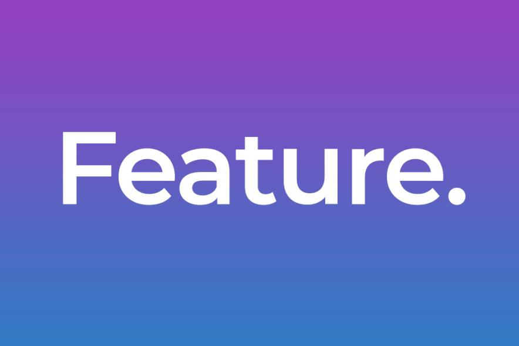

What is Advanced Locomotion ?
Roblox Advanced Locomotion is a free enhanced camera and player control module for Roblox Studio. It allows games to be easily crossplay friendly. It includes more animation and triggers.
Crossplay Controllers
New 3D Animations
New FX

Hotfix
Fixed PlayerCamera being detached to player character therefore not following player rotation. Target is in TPS-Camera.lua
See on Github

Feature Added
Developpers can now toggle enable/disable anti-climb system by changing boolean value. Target is in Anticlimb.lua
See On GithubHotfix
Fixed PlayerController not responding after changing Roblox Studio monitor display mode.
See On Github